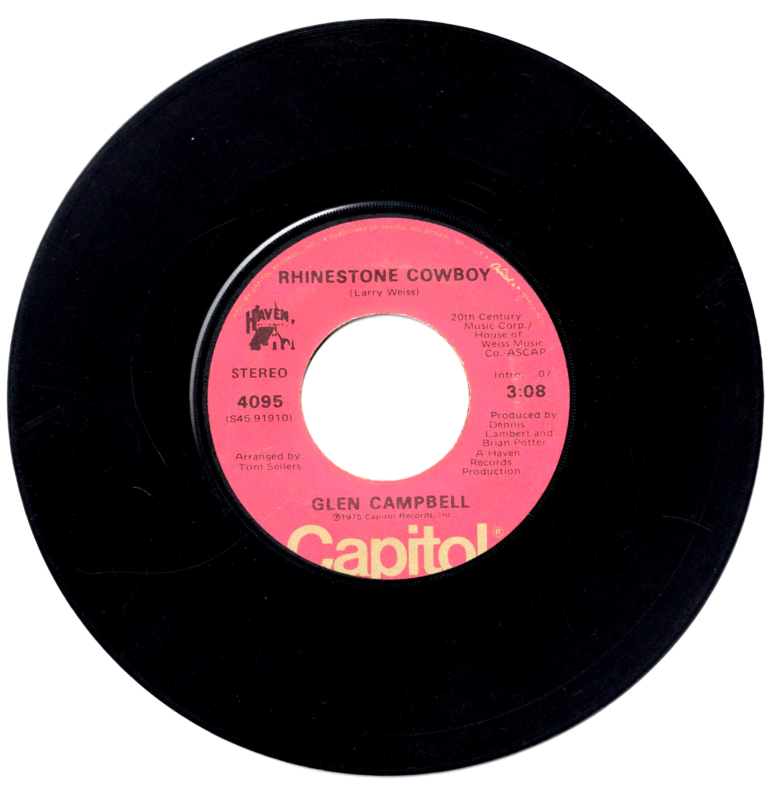

Product No. HEC-0126
$4.95
Shipping: $8.95
Description
45 RPM, 7-inch vinyl
Full Description
Glen Campbell (1936–2017) (Deceased) was an American singer, guitarist, songwriter, and actor whose smooth voice and exceptional musicianship made him one of the most successful crossover entertainers of the 1960s and 1970s. Born in Billstown, Arkansas, Campbell began playing guitar as a child and eventually moved to Los Angeles, where he became a highly sought-after session musician. Campbell was part of the celebrated group of studio musicians later known as "The Wrecking Crew," performing on recordings by artists including Frank Sinatra, Elvis Presley, the Beach Boys, and the Monkees. He also toured with the Beach Boys during the mid-1960s. His solo career brought enormous success with hits such as "Gentle on My Mind," "By the Time I Get to Phoenix," "Wichita Lineman," "Galveston," "Rhinestone Cowboy," and "Southern Nights." His recordings blended country, pop, and folk influences and helped introduce country music to a broader mainstream audience. From 1969 to 1972, Campbell hosted the popular television variety series "The Glen Campbell Goodtime Hour." He also appeared in films, most notably opposite John Wayne in the 1969 Western "True Grit." During his career, Campbell won numerous Grammy Awards and was inducted into the Country Music Hall of Fame in 2005. After being diagnosed with Alzheimer's disease, he publicly documented his final concert tour and struggle with the illness. He died in 2017 at age 81, leaving behind a lasting legacy as one of America's most distinctive singers and guitarists.
Condition
Good condition